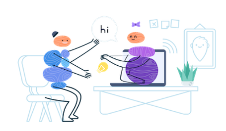
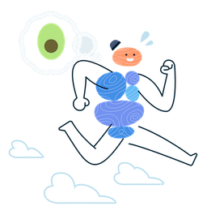
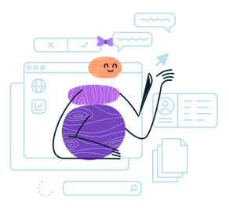

¡Hola! Mi nombre es Inés Morán, soy Dietista-Nutricionista y sin embargo la palabra "dieta" no me ha gustado nunca. Creo fielmente que, para conseguir un objetivo, sea del tipo que sea, no es necesario sufrir para alcanzarlo.
Por esa razón, desde mi consulta promuevo la individualización de cada persona, para que juntos alcancemos la mejor versión de uno mismo. Sin restricciones, prohibiciones o culpabilidad que frustren un camino de aprendizaje y cambio de hábitos. Sea cual sea tu objetivo, vamos a por él.
Me gradué por la Universidad de Valladolid y actualmente pertenezco al Colegio de Dietistas-Nutricionistas de Castilla y León, nº CYL00346.
Mi vida siempre ha estado ligada al deporte, ya que he sido nadadora desde los 8 años. A raíz de mi disciplina y con el objetivo de mejorar mi rendimiento, comenzó mi interés por el mundo de la nutrición y en especial, de la nutrición deportiva. Es por ello que, actualmente me encuentro estudiando un máster especializado en la nutrición dentro del deporte y del ejercicio físico en la Universidad de Westminster (Londres).
Pero no todo es deporte. Esta maravillosa profesión me ha dado la oportunidad de ayudar a otras personas a través de la nutrición, bien sea con la mejora de hábitos y la relación con la comida, el cumplimiento de objetivos o la mejora en el tratamiento de patologías; lo que actualmente más me aporta como profesional y como persona.
Además, debido a mi curiosidad incansable, empecé a interesarme por el mundo de la investigación y gracias a ello he tenido el placer de llevar a cabo 2 proyectos científicos:
Uno de ellos junto a la Universidad de Valladolid, referente a los diversos métodos para medir la composición corporal en jóvenes nadadores y su utilidad de cara al rendimiento deportivo.
Otro junto al Centro Regional de Medicina Deportiva de Valladolid (CeReMeDe), en el que trabajé conjuntamente con el grupo de especialistas del centro, en la valoración nutricional de deportistas de la disciplina de danza.
El conocimiento adquirido en cada uno de los campos, hace que hoy disponga de las herramientas necesarias para llevar a cabo un único objetivo: La promoción de la salud de mis pacientes.
Consulta online
Primera Consulta
30€1h

Zoom / Skype
Valoración completa del paciente, se lleva a cabo la historia clínica teniendo en cuenta:
Objetivos y necesidades
Hábitos nutricionales y deportivos
Preferencias alimentarias
Estilo de vida
Seguimientos
20€30min

Zoom / Skype
Cada 15 días (o mayor periocidad según preferencia)
Valoración de progresos
Resolución de dudas
Entrega de nuevo menú
Realización de modificaciones
Cómo trabajo

Objetivo
Mi objetivo fundamental como profesional es buscar siempre la salud en su conjunto y sin restricciones, siempre acompañada de la flexibilidad.
Educación nutricional
Me gusta hacer entender que los alimentos no son buenos ni malos per se, sino que todos ellos han de mirarse en un contexto, especialmente teniendo en cuenta el objetivo del paciente. Esto hace que la educación nutricional sea un trabajo esencial en mi consulta, con el fin de que cuando el paciente la abandone, sepa por si mismo hacer buenas elecciones en su día a día.
Estudio individualizado
Mi prioridad, es conocer al paciente a fondo para poder llevar a cabo una intervención lo más individualizada posible, por lo que me gusta invertir suficiente tiempo en la 1ª consulta. Recuerda que no todos somos iguales, y cada persona tendrá diferentes necesidades. Será el propio paciente, quien elija cómo desarrollar el tratamiento propuesto, para que la adaptación al mismo sea perfecta.
Hi! My name is Inés Morán, I am Dietitian-Nutritionist and yet I have never liked the word "diet". I firmly believe that, to achieve a goal, whatever it may be, it is not necessary to suffer in order to reach it.
For this reason, in my consultation I promote the individualisation of each person, so that together we can achieve the best version of ourselves. Without restrictions, prohibitions or guilt that frustrate a path of learning and habit change. Whatever your goal may be, let's go for it.
I graduated from the University of Valladolid, and I am currently a member of the College of Dietitians-Nutritionists of Castilla y León (Spain), nº CYL00346.
My life has always been linked to sports, as I have been a swimmer since I was 8 years old. As a result of my discipline and with the aim of improving my performance, my interest in the world of nutrition and especially sports nutrition began. That is why I am currently studying a specialized master's degree in nutrition for sports and exercise at the University of Westminster (London).
But it's not all about sport. This wonderful profession has given me the opportunity to help other people through nutrition, whether it be improving habits and relationships with food, achieving goals or improving the treatment of pathologies; which is what currently brings me the most professionally and personally.
In addition, due to my tireless curiosity, I became interested in the world of research, and as a result, I had the pleasure of carrying out 2 scientific projects:
The first of them together with the University of Valladolid, concerning the various methods for measuring body composition in young swimmers and their usefulness for sports performance.
The other, with the Regional Center for Sports Medicine in Valladolid (CeReMeDe), where I worked with the group of specialists at the center, on the nutritional assessment of dancers.
The knowledge that I have acquired in each of these fields has equipped me with the necessary tools to achieve a single goal: Improving the health of my patients.
Online Consultation
First Consultation
₤301h
Zoom / Skype
Complete assessment of the patient, the clinical history is taken, taking into account:
Objectives and needs
Nutritional and sporting habits
Food preferences
Lifestyle
Follow-ups
₤2030min
Zoom / Skype
Every 15 days (or more frequently according to preference)
Assessment of progress
Addresing doubts
Delivery of new menu
Making modifications
How I work
Mission
My fundamental goal as a professional is to always seek overall health without restrictions, always accompanied by flexibility.
Nutritional education
I like to make it clear that foods are not inherently good or bad, but all of them should be viewed in context, especially taking into account the patient's goals. This makes nutritional education an essential part of my work, so that when the patient leaves, they will know how to make good choices for themselves on a daily basis.
Individualised study
My priority is to get to know the patient thoroughly in order to carry out the most individualised intervention possible, which is why I like to invest enough time in the first consultation. Remember that we are not all the same, and each person will have different needs. It will be the patient themselves who chooses how to develop the proposed treatment, so that the adaptation to it is perfect.